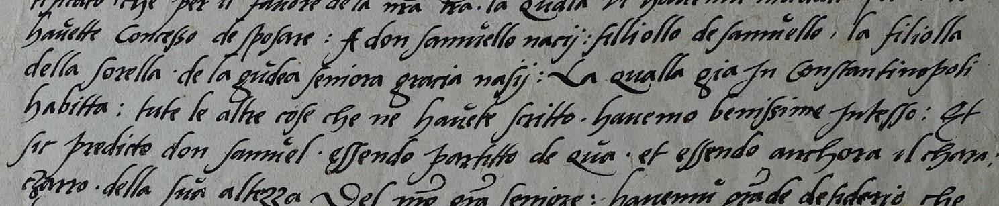
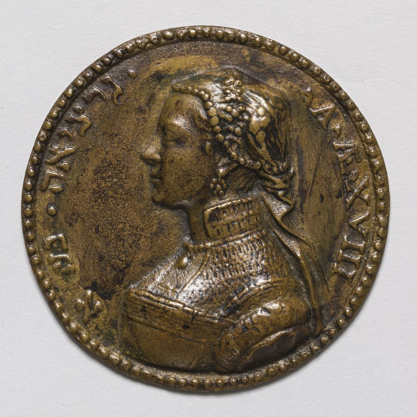
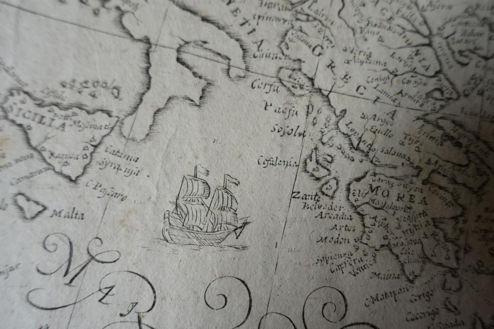

Scegli come navigare nel sito

CATALOGO
Il catalogo raccoglie tutte le testimonianze (fonti documentarie e iconografiche, pubblicazioni, media, ecc.) relative alla figura di Gracia Nasi. Gli items sono filtrabili per categoria e ad ognuno è associata una scheda contenente metadati descrittivi

PERSONE
Attraverso la navigazione per persone, è possibile visualizzare le fonti filtrandole in base alla persona a cui si riferiscono: può trattarsi del mittente oppure del destinatario di una lettera, di una persona che viene citata in un documento, del dedicatario di un'opera commemorativa, ecc.

MAPPA
La mappa cartografica interattiva consente di tracciare l'itinerario di Gracia Nasi attraverso le varie nazioni che la accolsero, evidenziando le variazioni del suo nome in base al grado di tolleranza religiosa del paese di destinazione e alla possibilità di manifestare la propria fede ebraica. Per ogni tappa del suo viaggio sono consultabili i documenti relativi.

TIMELINE
È possibile navigare i contenuti anche attraverso una linea del tempo interattiva nella quale sono inserite le lettere di cui Gracia Nasi era mittente o destinataria e quelle che fanno riferimento a lei, nonchè le altre fonti in cui ricorre il suo nome (es. testamenti e altri atti notarili).